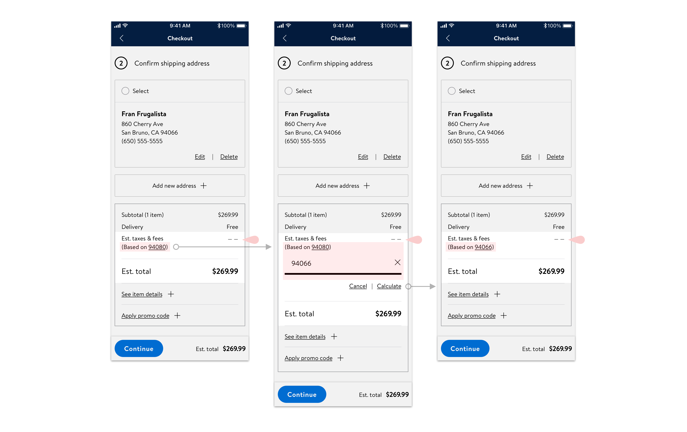

Optimizing disclosure on tax and fees for Walmart customers
Shipped · End-to-end experience design · Responsive web · Native apps
My role
UI/UX designer - drove design from concept to launch
Cross-functional team
Product Manager, Design Researcher, Content Strategist, and support from design team
Overview
Price is one of the major factors for any purchase. According to Baymard's UX benchmark, when customers have a difficult time estimating what they will need to pay for their order in total, many will be reluctant to enter checkout flow.

At Walmart.com, we are ahead of the game. We keep transparent about the total cost of an order upfront before asking our customers to initiate checkout. On top of item subtotal, we disclose additional costs upfront, such as shipping, taxes, and fees, to help our customers make informed decisions and manage budgets easily.
With that back-end logic in mind, we decided to improve the customer’s perception of trust by optimizing the discourse of taxes and fees during their transaction. We explored designs to hide the amount for taxes and fees before it’s calculated based on the fulfillment address. Back in October 2019, we rolled out an A/B test with the new approach and noticed a positive lift in GMV (+2.6%) and visitor conversion rate (+1.6%).

Lifted performances with the new design
With that back-end logic in mind, we decided to improve the customer’s perception of trust by optimizing the discourse of taxes and fees during transaction. We explored designs to hide amount for taxes and fees before it’s calculated based on the fulfillment address. Back in October 2019, we rolled out an A/B test with the new approach and noticed a positive lift in GMV (+2.6%) and visitor conversion rate (+1.6%).

Insights from usability study
Through a usability study, customers understood that their delivery address would affect their taxes & fees and thus it would be finalized after they selected their delivery address. They also understood "--" meant that it was not yet calculated. However, we also learned our design decision can be further tweaked to better address customers’ mental modal.
Recommendation 1 - Remove the presence of zip code from the tax line. Customers believe all you need is a zip. They were confused why Walmart cannot estimate the taxes and fees if we have a zip code to base it on. They initially thought that updating the zip would show them est. taxes & fees but then double guessed themselves as it currently doesn’t show an estimated amount.
Recommendation 2 - Scrutinize line title to help customers understand the exact amount for tax and fees. Customers were unsure why they are still estimated after the fulfillment address is confirmed. They wanted to know an exact amount they would be charged before submitting payment.
Minimal impact of removing zip code from POS
I worked with my product partner and understood the impact of removing the zip code link from POS would be minimal. The main use cases that customers would require an access to zip code during transaction flow have been handled explicitly. On top of that, a low click-through rate (CTR 2%) on the current POS zip code indicated a low possibility of causing frictions.

Competitive analysis
I learned from other competitors that it’s important to be mindful about guiding through customer’s expectations on tax and fees. Displaying a tax disclaimer is a widely adopted treatment to help elaborating on the invisibility of estimated tax and fees.

Ideation & iterations
Knowing we are designing for time-sensitive busy families at Walmart, the key design principles I followed for displaying the tax disclaimer were discoverability and clarity. I iterated on several design options and was able to identify the rationales for each approach.
Option 1 - Attaching an inline disclaimer for tax and fees

Option 2 - Removing tax (and fees) line from POS, elaborating on order total line

Option 3 - Displaying tax (and fees) disclaimer as a flyout

Final solution and takeaways
Worked closely with the content strategist, design research and product manager, I was able to propose a well-thought-out solution that fits in all use cases. To balance all the considerations and trade-offs, we decided to move forward with displaying an inline disclaimer with dynamic messages to address the different stages during transaction flow.

I never thought working on a project with such a small scope would be this rewarding, and impactful on our 100+ million active customers per month. From pixels and font sizes to every single word embedded into the content, I truly realized the incredible efforts need to be weaved into a thoughtful design decision.

While this feature is being A/B tested, let’s stay tuned for the results and impact :)